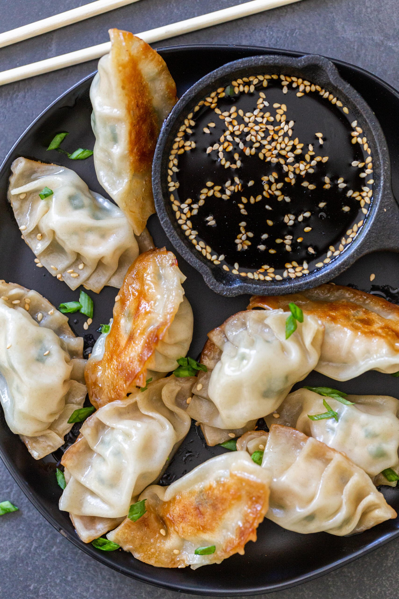

Gyoza 餃子

Description
Gyoza (餃子), sometimes referred to as potstickers, are small
pan-fried dumplings typically filled with pork, but can also be found in a
variety of flavors. These tiny joys actually have their origins in China,
and has lasted the test of time in Japan as a favorite snack in
izakayas. The Japanese versions are a little bit smaller, with a
thinner skin which allows for a perfectly crisp bottom.
Ingredients
- 1 package gyoza wrappers
- 1 Tbsp vegetable oil
- 1/4 cup water
- 1 tsp toasted sesame oil (for frying)
- 3/4 lb ground pork
- 2-3 leaves cabbage
- 2 green onions
- 2 shiitake mushrooms
- 1 clove minced garlic
- 1 knob ginger
- 1 tsp sake
- 1 tsp toasted sesame oil (for filling)
- 1 tsp soy sauce
- 1/4 tsp sea salt
- 1/8 tsp black pepper
Steps
-
Cut the cabbage, green onions, and shiitake mushrooms into finely diced
pieces. Grate the ginger.
-
Combine the chopped ingredients into a bowl and add the ground pork.
-
Add the toasted sesame oil, soy sauce, sea salt, sake, and black pepper
to the bowl.
- Mix together by hand.
-
Take one wrapper and place a small amount of filling in the center. Wet
the edges around the filling all the way around. Fold in half and pinch
the center. Begin to make pleats from one end to the other until sealed.
-
Heat the oild in a non-stick pan over medium heat. Place gyoza flat-side
down in a circular shape.
- Cook for about 3 minutes or until the bottoms turn golden brown.
-
Add the water to the pan, cover with a lid, and allow gyoza to steam for
3 more minutes.
-
Remove lid, allow any remaining water to evaporate, and add the toasted
sesame oil. Cook uncovered until the gyoza bottoms are crispy.
- Plate up and enjoy!